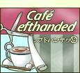

世界には、レオナルド・ダ・ヴィンチとかオバマ元大統領とか、ステキな左利きが綺羅星のごとくいます。
There is a galaxy of brilliant left-handed celebrities such as Leonardo da Vinci, former U.S.President Obama etc.
-
そこで "カフェ レフトハンデッ"開きました！
可愛い左利きグッズの見つかるお店です。
みんなで右脳活性化してしまいましょう。
もちろん右利きの方もどうぞ。
左利きになれるチャンスです！ - 
-
Here it is a left-handed goods shop!
Would you care for something activate your right brain?
Welcome to "Cafe Lefthanded"!
(Only Japanese site, so far)
Someday, we launch a cafe for the left-handed people.